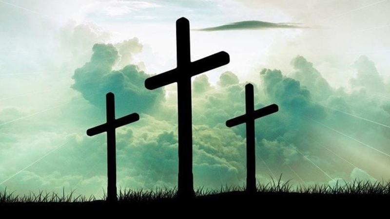

Sesión 3: Semana Santa
No hubo clase debido a la Semana Santa, por si no sabes qué día cayó el feriado, te dejo un poco de información sobre la Semana Santa 2022.
¿Qué es la semana santa?
La Semana Santa 2022 es la festividad cristiana más importante del año pues reúne a miles de fieles religiosos que se exponen a ocho días de reflexión, durante los cuales se recuerda la vida, pasión y muerte de Jesús, el hijo de Dios.
¿Cuándo fue la semana santa 2022?
Se celebró en los siguientes días
- Domingo de Ramos: 10 de abril de 2022.
- Lunes Santo: 11 de abril de 2022.
- Martes Santo: 12 de abril de 2022.
- Miércoles Santo: 13 de abril de 2022.
- Jueves Santo: 14 de abril de 2022. <---- Día de la clase perdida
- Viernes Santo: 15 de abril de 2022.
- Sábado Santo: 16 de abril de 2022.
- Domingo de Resurrección: 17 de abril de 2022.

Semana Santa